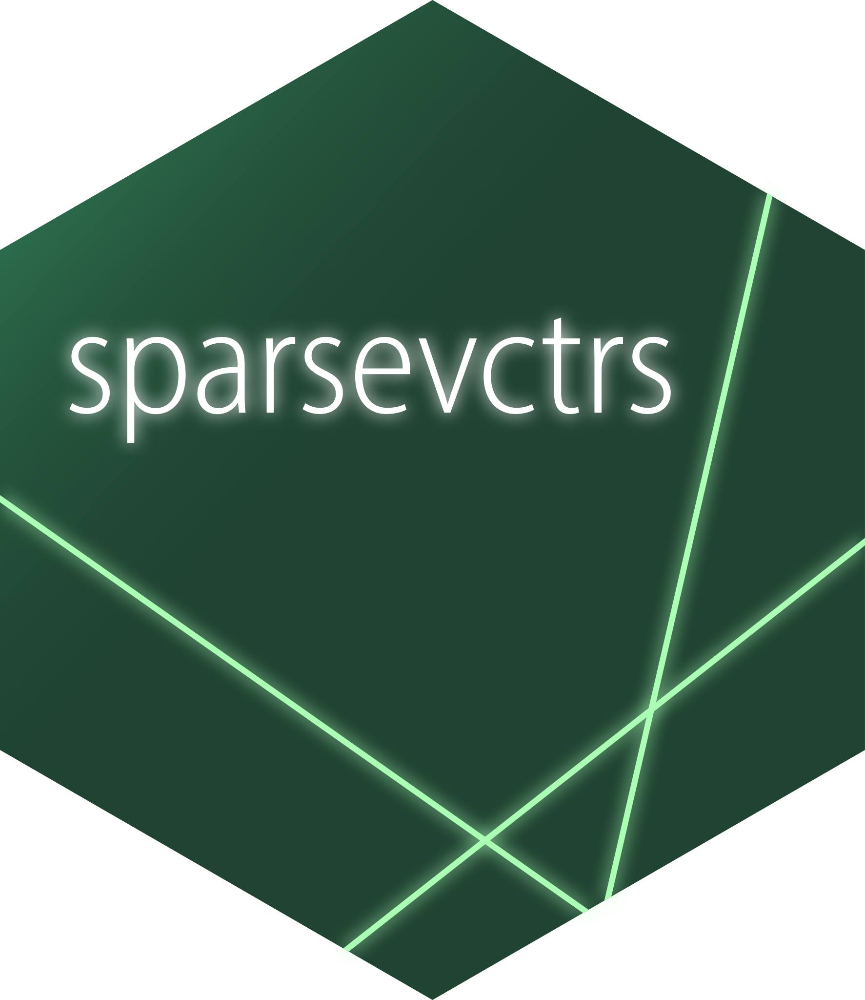
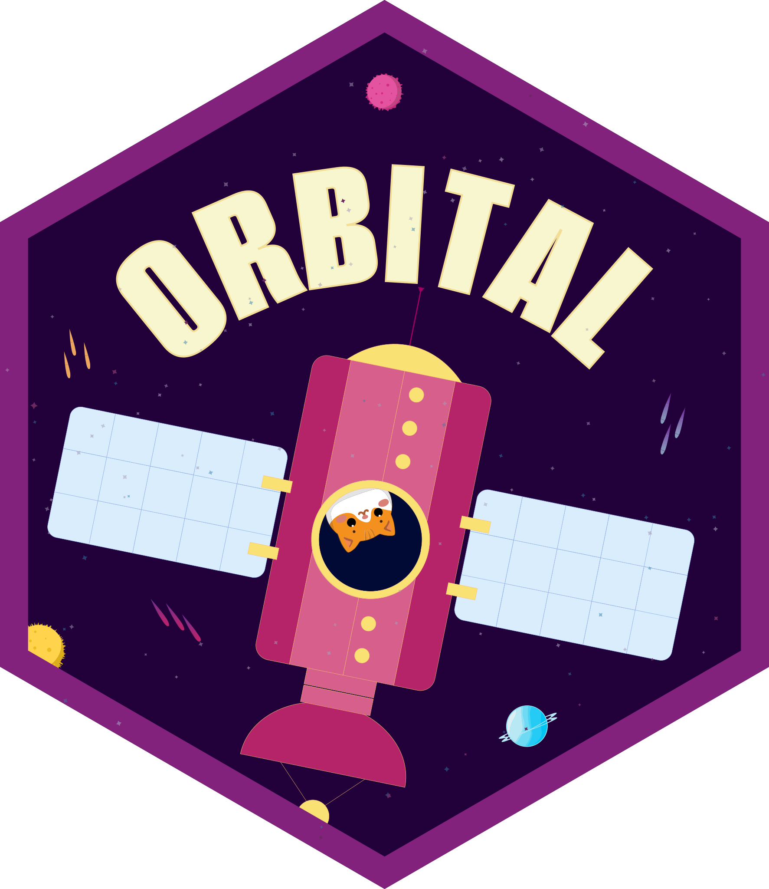
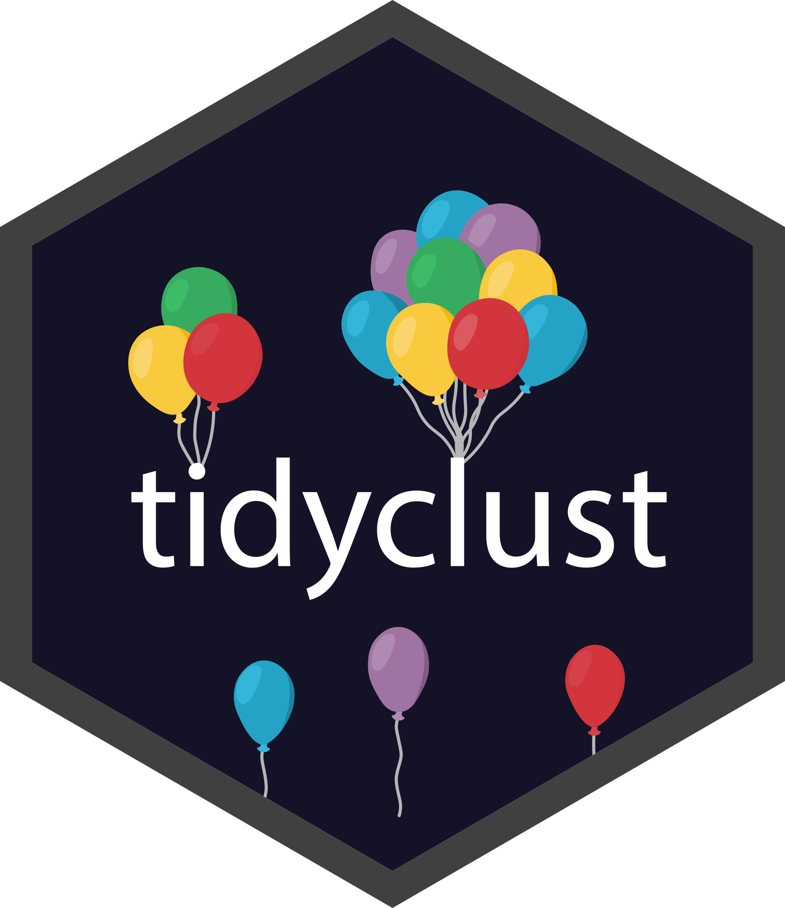
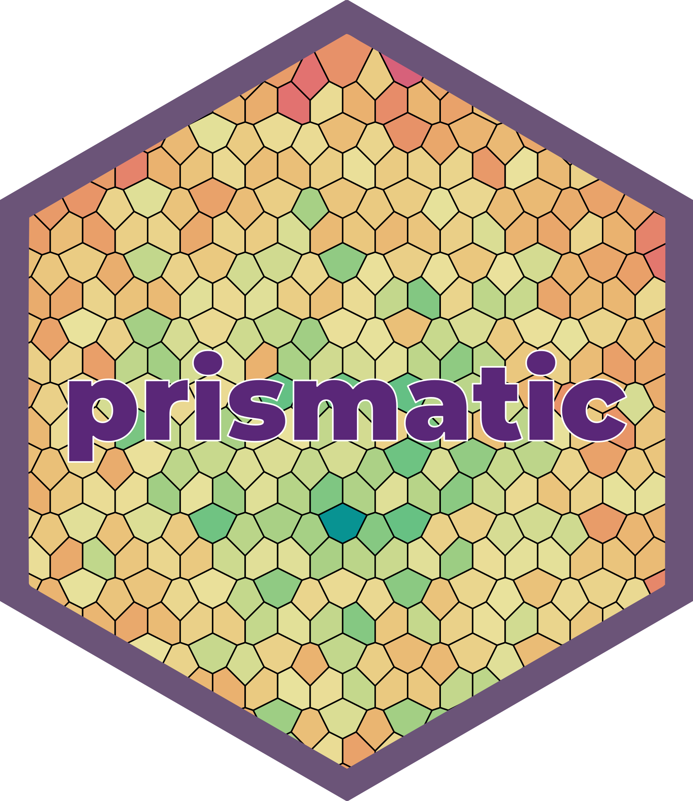
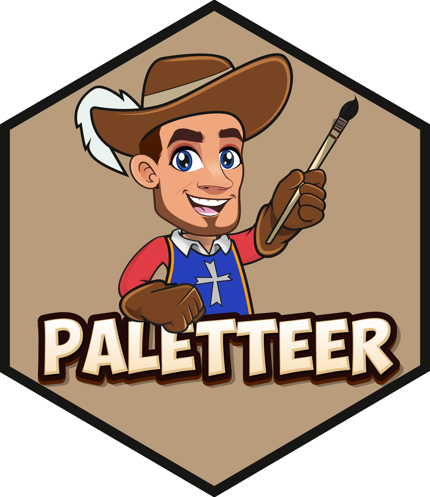
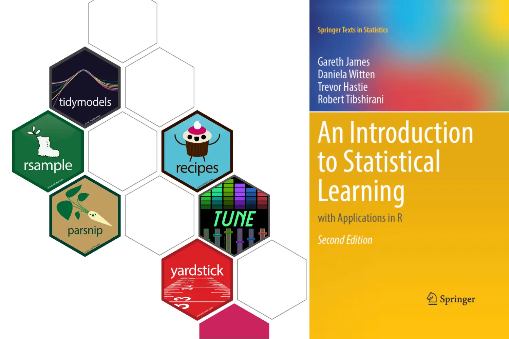
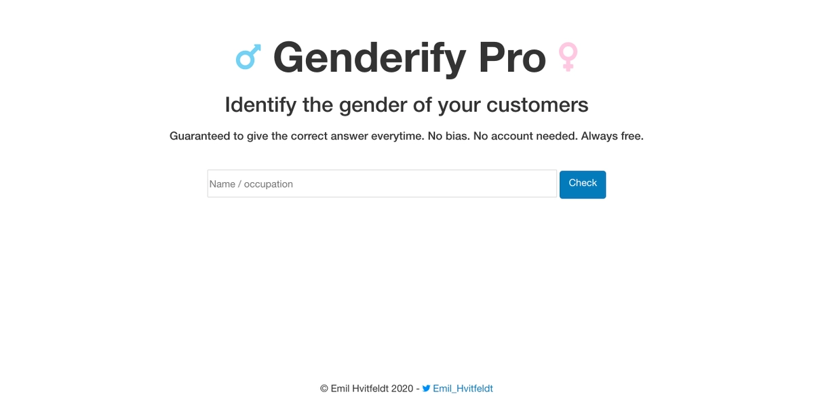
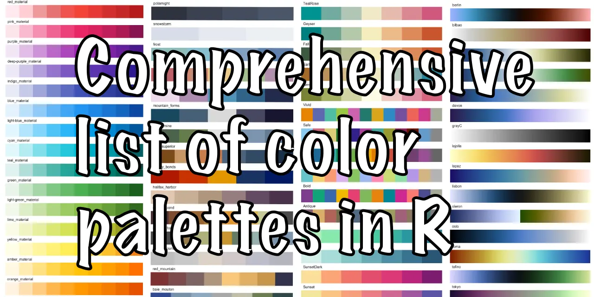

R Packages
R packages I have authored or contributed to.

sparsevctrs, enables sparsity operations in tidymodels

orbital, turning fitted workflows into SQL for easy predictions in databases

tidyclust, provides a tidy unified interface to clustering model within the tidymodels framework

prismatic, manipulate and visualize colors in a intuitive, low-dependency and functional way

paletteer, a comprehensive collection of color palettes in R using a common interface
Books
Data Sets
Datasets packaged for easy use in R.
Hover over a hex for more information
Websites

ISLR tidymodels labs
Provides labs to ‘An Introduction to Statistical Learning’ using tidymodels

genderify
satirical Gender Classification Service
R Text Data
List of textual data sources to be used for text mining in R

R Color Palettes
Comprehensive list of color palettes available in R